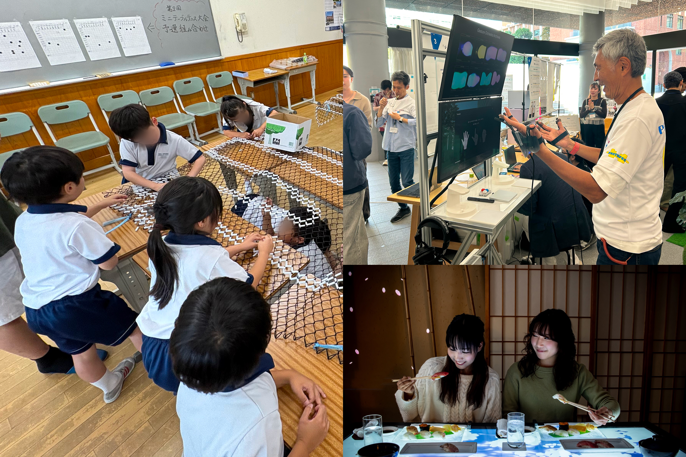

『近畿大学デザイン・クリエイティブ研究所紀要 Vol.2026』を公開
近畿大学
2026.11.01

本研究所では「デザイン」の本質を、人の体験、思考、行動から都市、環境、文化に至るまで、あらゆる社会課題を創造的に思考し、独創的なアイデアで未来へ繋ぐ営みと捉えています。
「プロト・フェス」「近大病院小児病棟プロジェクト」「MSD (Multi-Sensory Dining)」
これら3つのプロジェクトを通じて得た知見を紀要として収録しています。
以下のリンクからぜひご一読ください。